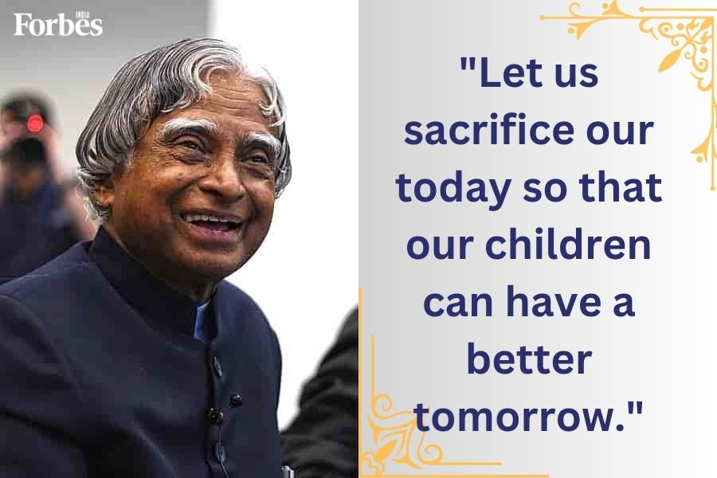

Dr. A.P.J ABDUL KALAM
(15 October 1931 – 27 July 2015)
The Missile Man of India
Avul Pakir Jainulabdeen Abdul Kalam was an Indian aerospace scientist and statesman who served as the 11th president of India from 2002 to 2007. He was born and raised in Rameswaram, Tamil Nadu and studied physics and aerospace engineering. He spent the next four decades as a scientist and science administrator, mainly at the Defence Research and Development Organisation (DRDO) and Indian Space Research Organisation (ISRO) and was intimately involved in India's civilian space programme and military missile development efforts.He thus came to be known as the Missile Man of India for his work on the development of ballistic missile and launch vehicle technology.He also played a pivotal organisational, technical, and political role in India's Pokhran-II nuclear tests in 1998, the first since the original nuclear test by India in 1974
Early Life
Avul Pakir Jainulabdeen Abdul Kalam was born on 15 October 1931, to a Tamil Muslim family in the pilgrimage centre of Rameswaram on Pamban Island, then in the Madras Presidency and now in the State of Tamil Nadu. His father Jainulabdeen Marakayar was a boat owner and imam of a local mosque his mother Ashiamma was a housewife. His father owned a ferry that took Hindu pilgrims back and forth between Rameswaram and the now uninhabited Dhanushkodi. Kalam was the youngest of four brothers and one sister in his family. His ancestors had been wealthy Marakayar traders and landowners, with numerous properties and large tracts of land. Marakayar are a Muslim ethnic group found in coastal Tamil Nadu and Sri Lanka who claim descent from Arab traders and local women. The family business had involved trading groceries between the mainland and the island and to and from Sri Lanka, as well as ferrying pilgrims between the mainland and Pamban. With the opening of the Pamban Bridge to the mainland in 1914, however, the businesses failed and the family fortune and properties were lost by the 1920s, apart from the ancestral home. The family was poverty-stricken by the time Kalam was born. As a young boy he had to sell newspapers to add to the family's meager income. Kalam moved to Madras in 1955 to study aerospace engineering in Madras Institute of Technology.While Kalam was working on a senior class project, the Dean was dissatisfied with his lack of progress and threatened to revoke his scholarship unless the project was finished within the next three days. Kalam met the deadline, impressing the Dean, who later said to him, "I was putting you under stress and asking you to meet a difficult deadline."[23] He narrowly missed achieving his dream of becoming a fighter pilot, as he placed ninth in qualifiers, and only eight positions were available in the IAF.
Presidency
Kalam served as the 11th president of India, succeeding K. R. Narayanan. He won the 2002 presidential election with an electoral vote of 922,884, surpassing the 107,366 votes won
by Lakshmi Sahgal. His term lasted from 25 July 2002, to 25 July 2007.On 10 June 2002, the National Democratic Alliance (NDA) which was in power at the time, expressed that they
would nominate Kalam for the post of President, and both the Samajwadi Party and the Nationalist Congress Party backed his candidacy.After the Samajwadi Party announced its support for Kalam,
Narayanan chose not to seek a second term in office, leaving the field clear. Kalam said of the announcement of his candidature:
I am really overwhelmed. Everywhere both in Internet and in other media, I have been asked for a message. I was thinking what message I can give to the people of the country at this juncture.
On 18 June, Kalam filed his nomination papers in the Indian Parliament, accompanied by Vajpayee and his senior Cabinet colleagues.During his term as president, he was affectionately known as the People's President,
Memorial
The Dr. A. P. J. Abdul Kalam National Memorial. was built in memory of Kalam by the DRDO in Pei Karumbu, in the island town of Rameswaram, Tamil Nadu. It was inaugurated by Prime Minister Narendra Modi in July 2017. On display are the replicas of rockets and missiles which Kalam had worked with. Acrylic paintings about his life are also displayed along with hundreds of portraits depicting the life of the mass leader. There is a statue of Kalam in the entrance showing him playing the Veena. There are two other smaller statues of the leader in sitting and standing posture.
Awards
-
1997 | Bharat Ratna
1998 | Veer Savarkar
1981 | Padma Bhushan
1990 | Padma Vibhushan
2013 | Von Braun Award